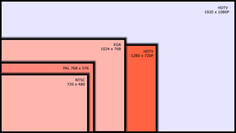

Units of measurement: 'px', 'em', 'rem' and other
I will try not only to write about variety of units, but also build a full picture - what and when better to choose.
Table of Contents
pxPixel px - is the most basic, absolute and final unit of measurement.
The number of pixels on monitor is set in screen resolution configuration. A px is such a one pixel on the screen. All values browser eventually translated into pixels.

The main advantage px is clarity and understandability.
The px are not relative and don’t allow to set relationships between other dimensions.
Measurement in em are relative, they are defined by current context.
1em it’s current font size.
Since the value of em is calculated to the current font size, the nested string will 1.5 times larger than parent:
%The % as the em are relative to current context measurements but there are nuances.
Is works different with these properties: margin-left, line-height, width/height with position: fixed.
The same example:
px and em: remMeasure rem defines font size relatively to html element size.
See the Pen em vs rem by qetr1ck-op (@qetr1ck-op) on CodePen.
The principles behind vw, vh are to represent percentage of browser viewport width / height.
1vw = 1/100 of the current viewport width, i.e. 1% of width.
10vh = 10/100 of the current viewport height, i.e. 10% of height.
After first glance, it seems that vw, vh are redundant, because we already have % measurement system:
Limitation of percentage measurement system:
viewport height is always hard to measure, as the height of
<body>depends on content, not on the dimension of the browser windowbody measurement cannot be applied to the
font-size, because it relates to parent container, not to the dimension of viewport
Example, backgrounds and vh:
See the Pen Backgrounds and the vh unit by qetr1ck-op (@qetr1ck-op) on CodePen.
Example, backgrounds and vw:
See the Pen Backgrounds and the vw unit by qetr1ck-op (@qetr1ck-op) on CodePen.
Image, vw:
See the Pen Images and vw width by qetr1ck-op (@qetr1ck-op) on CodePen.
Respectively are related to the maximum or minimum of those widths and heights, depending on which is smaller and larger. For example, if the browser was set to 1100px wide and the 700px tall, 1vmin would be 7px and 1vmax would be 11px.
1vmin = 1vw or 1vh, whichever is smaller1vmax = 1vw or 1vh, whichever is larger